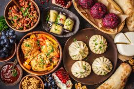

Грузія
країна інформація
ну тут просто гугл карта та інформація про саму країну якщо цікаві страви вам нижче
а вот тут і сама страва
ну тут кулінарні традиції

зробив Пашка Дурков. Дата створення 2025 рік